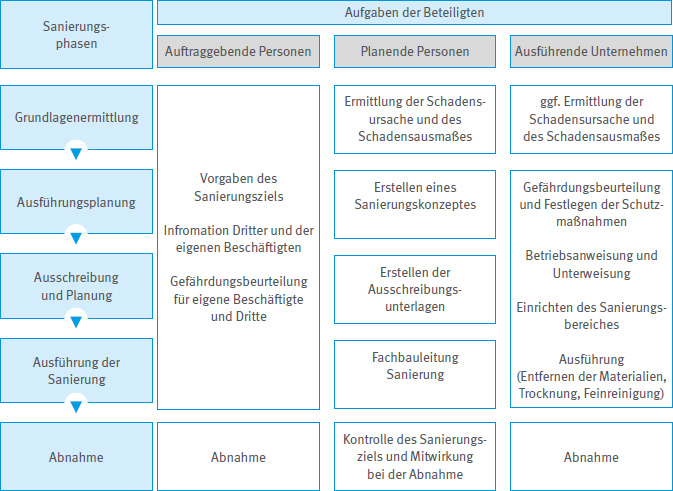

Die Auftraggeberin bzw. der Auftraggeber initiiert die Sanierungsmaßnahme und trägt die Gesamtverantwortung für die Durchführung des Sanierungsvorhabens. Der Auftraggeberin bzw. dem Auftraggeber obliegt gemäß Landesbauordnungen die Verantwortung, Gefährdungen und Belästigungen, die vom Gebäude ausgehen, sowohl von den Gebäudenutzenden und der Nachbarschaft als auch von den an den Sanierungsmaßnahmen Beteiligten fernzuhalten. Die Auftraggeberin bzw. der Auftraggeber beauftragt fachlich geeignete Personen und Unternehmen wie Planungsbüros, Gutachterbüros, bauausführende Unternehmen mit bestimmten Aufgaben.

Abb. 1 Sanierungsphasen und Aufgaben der Beteiligten
Die Auftraggeberin bzw. der Auftraggeber trägt die Verantwortung für die Sanierungsplanung und gibt das Sanierungsziel, den Leistungsumfang und das Schutzniveau, z. B. besondere Maßnahmen für den Schutz Dritter, vor. Dabei kann auf die Unterstützung durch Planungs- oder Gutachterbüros zurückgegriffen werden. Die Sanierungsplanung umfasst neben der Auswahl der Sanierungsmethode (Entfernen der mikrobiell besiedelten Materialien, Trocknung etc.) und der technischen Ausführung auch die Aspekte des Arbeitsschutzes. Dabei ist auf die Auswahl staubarmer Arbeitsverfahren zu achten.
Bereits bei der Planung sind von den Auftraggebenden gemäß Baustellenverordnung die allgemeinen Grundsätze nach § 4 des Arbeitsschutzgesetzes zu berücksichtigen. Dazu zählt die Auswahl geeigneter Schutzmaßnahmen (Rangfolge STOP, vgl. Kapitel 6.2 und 9.1). Für Sanierungsmaßnahmen, bei denen Beschäftigte mehrerer Unternehmen tätig werden, ist eine Koordination zu veranlassen, um gegenseitige Gefährdungen zu vermeiden. Wenn die Auftraggebenden diese Aufgabe nicht selbst übernehmen, können sie Dritte beauftragen, die notwendigen Maßnahmen für die Sicherheit und den Gesundheitsschutz der Beschäftigten zu treffen.
Liegen der Auftraggeberin bzw. dem Auftraggeber Informationen über weitere Gefährdungen vor (z. B. Gebäudeschadstoffe wie Asbest oder alte Mineralwolle-Dämmstoffe; Gefährdungen aus dem laufenden Betrieb), so müssen diese Informationen an das beauftragte Unternehmen weitergeben werden. Haben die Auftragnehmerin bzw. der Auftragnehmer den Verdacht, dass weitere Gefährdungen vorliegen, sind vor Aufnahme der Tätigkeiten Erkundigungen zu Art und Ausmaß der Gefährdungen einzuholen.
Die Auftraggeberin bzw. der Auftraggeber berücksichtigt bei der Ausschreibung die notwendigen Arbeitsschutzmaßnahmen und Maßnahmen zum Schutz Dritter und weist diese in der Leistungsbeschreibung aus.
Die Auftraggeberin bzw. der Auftraggeber beauftragt für die Ausführung der Sanierung qualifizierte Firmen, die die Durchführung der Gefährdungsbeurteilung durch eine fachkundige Person gewährleisten. Die Fachkunde umfasst u. a. Kenntnisse im Arbeitsschutz (siehe Anhang 1).
Vergibt ein beauftragtes Unternehmen seinerseits Aufträge, die es übernommen hat, an ein Nachunternehmen, so treffen das Unternehmen die Pflichten des Auftraggebenden selbst. Dabei ist insbesondere zu berücksichtigen, dass die Weiterleitung der notwendigen Informationen an alle Beteiligten sichergestellt ist.
Nach der Sanierung ist es die Aufgabe des Auftraggebenden im Rahmen einer Abnahme den Erfolg der Sanierungsmaßnahmen festzustellen. Die Abnahme erfolgt vor Aufhebung der Schutzmaßnahmen und kann gemeinsam mit einer Planerin bzw. einem Planer oder einer Gutachterin bzw. einem Gutachter erfolgen. Hinweise zur Abnahme liefert das WTA-Merkblatt "Ziele und Kontrolle von Schimmelpilzsanierungen in Innenräumen".
Die Auftraggeberin bzw. der Auftraggeber kann weitere Funktionen erfüllen und trägt damit weitere Verantwortung: